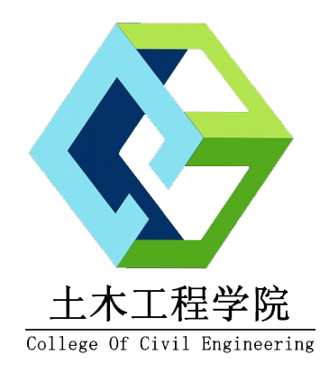

本课程负责人王家远安教授，最近5年主持了基础设施项目风险的动态管理方法:考虑利益相关者的风险态度和风险相互影响、Re-considering Sustainable Building and Design: A Cultural Change Approach、2010-2011年监理行业发展研究报告，粤港跨境基建项目风险的识别和分担机制研究等4项国家、省部级科研项目，主持完成深圳市建筑业“十二五”发展规划、深圳市建筑废弃物综合利用战略研究、浦东虹桥两场信息系统整合过程的风险分析与研究、建筑废弃物减排管理规范、建设工程施工监理规范等风险评估分析项目10余项。
邹亮副教授，最近5年主持了基于手机精确定位的轨道交通枢纽客流动态预警建模与疏导策略研究、基于手机定位的轨道交通车站客流动态监控预警及疏导方法等2项国家及省部级项目，主持参与完了深圳市光明新区建设领域典型问题及其对策研究、深圳市政府工程认可人士制度研究、深圳市建筑企业的兼并与重组研究、深圳市建筑业品牌建设扶持政策研究等建设管理相关课题。
本课程团队教师承担了相关科研项目及经费，为课程建设提供了坚实的保障基础，并极大地丰富了教学素材，提升了教师自信心。
本课程团队教师有均为研究生导师，指导的全日制研究生为25位。通过指导研究生从事工程项目风险管理控制方面的学术研究，及时跟踪了领域最新发展趋势及行业动态，并挖掘提炼科学问题，为本课程建设的持续提升提供了根本保证。
学院的教学实验中心下设土木工程仿真实验室、基础力学实验室、测量实验室、建材实验室、结构实验室等，其中土木工程仿真实验室拥有良好的软硬件条件，配备有相关统计与仿真软件、可运行大型工程项目仿真与分析软件的计算机以及三维虚拟仿真投影设备（CAVE），实验设备总价值300余万元。
学院图书室面积460平米，专业图书资料齐全，现有土木建筑类中文藏书3万册，外文藏书6235册，中文期刊160余种，外文期刊110余种。